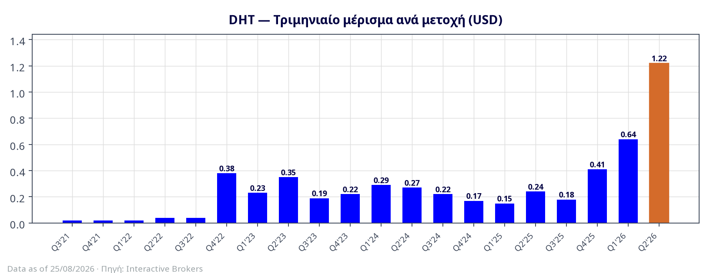
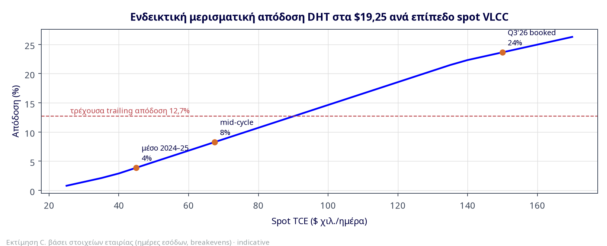
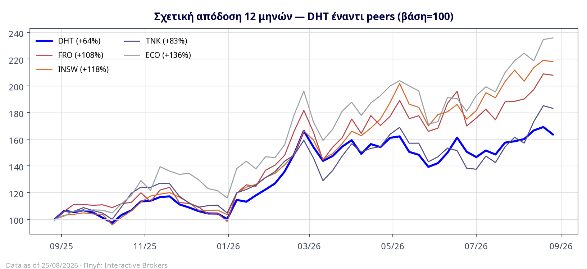
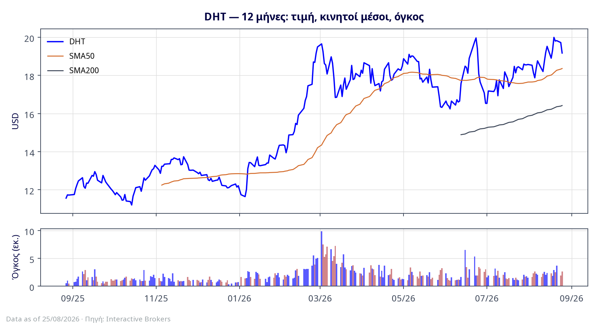
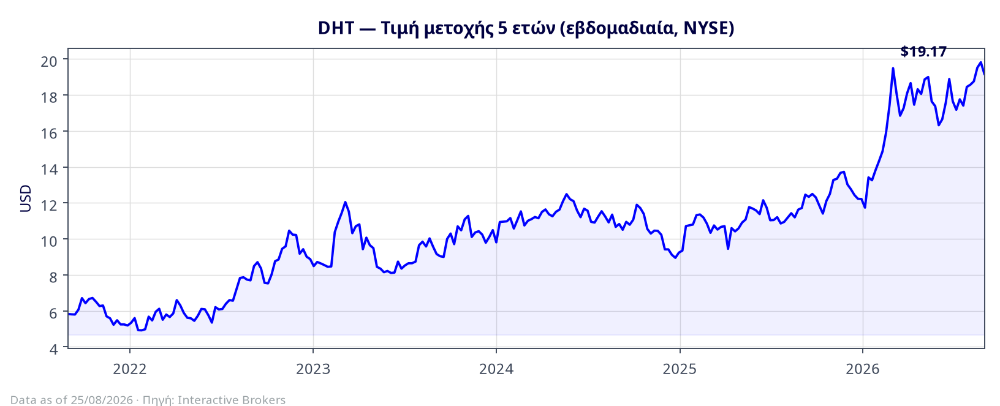

Η DHT είναι ο ποιοτικότερος «καθαρός» VLCC owner του NYSE σε μια στιγμή που η αγορά του βρίσκεται σε ιστορική, πολεμικά τροφοδοτούμενη υπερ-έξαρση. Το Q2 2026 ήταν το ισχυρότερο τρίμηνο στην ιστορία της εταιρίας: καθαρά κέρδη $198,3 εκατ. ($1,23/μετοχή), EBITDA $231 εκατ., στόλος στα $126.700/ημέρα (spot $162.600/ημέρα) και μέρισμα-ρεκόρ $1,22/μετοχή — το 66ο συνεχόμενο τριμηνιαίο μέρισμα. Το εξάμηνο H1 2026 ($362,9 εκατ.) ξεπέρασε ήδη το καλύτερο έτος στην ιστορία της (2020: $266,3 εκατ.). Ο καταλύτης είναι ο πόλεμος ΗΠΑ/Ισραήλ–Ιράν (από 28/02/2026) και το κλείσιμο των Στενών του Ορμούζ, που έστειλε το TD3C στα ~$585.000/ημέρα (21/08) — τα υψηλότερα επίπεδα από την έναρξη καταγραφών Baltic.
Το δίδυμο εύρημα που δεν φαίνεται με την πρώτη ματιά: (α) η DHT έχει υποαποδώσει όλους τους peers στο 12μηνο (+66% έναντι +83% έως +136% για TNK/FRO/INSW/ECO) — είναι το χαμηλού βήτα, χαμηλής μόχλευσης «αμυντικό» χαρτί του κλάδου, με μερίσματα που ανεβάζουν τη συνολική απόδοση στο ~+87%· και (β) στα $19,25 η μετοχή διαπραγματεύεται πλέον πάνω από την εκτιμώμενη καθαρή αξία στόλου (NAV ~$15,0–17,0/μετοχή, P/NAV ~1,15–1,25×), σε μια αγορά όπου το 5ετές VLCC ($143 εκατ.) κοστίζει περισσότερο από νεότευκτο ($128,5 εκατ.) και τα prompt resales ($168 εκατ.) γράφουν το μεγαλύτερο premium έναντι νεότευκτου στα 60 χρόνια ιστορίας των supertankers (Clarksons). Το περιθώριο ασφαλείας έχει μετατοπιστεί από τα assets στο earnings stream — κλασικό χαρακτηριστικό ύστερου κύκλου, την ίδια στιγμή που το orderbook VLCC εκτοξεύθηκε στο ~35% του στόλου (ρεκόρ 60ετίας).
Πίνακας 1 — Ταυτότητα & βασικά μεγέθη
| Στοιχείο | Τιμή | Στοιχείο | Τιμή |
|---|---|---|---|
| Τιμή (26/08/2026) IBKR | $19,25 (52W: $10,06–$20,62) | Μετοχές σε κυκλοφορία (30/06) | 161.235.573 |
| Κεφαλαιοποίηση / EV | ~$3,10 δισ. / ~$3,38 δισ. | Στόλος | 23 VLCC (~7,2 εκατ. dwt), μ.ο. ηλικίας ~9 έτη |
| Καθαρός δανεισμός (30/06) 6-K | $273 εκατ. ($11,9 εκατ./πλοίο) | Ρευστότητα | $569 εκατ. (cash $161,7 + αχρησιμοποίητα RCF $407,5) |
| Trailing EPS / DPS | $2,94 / $2,45 | Consensus 2026E EPS WEB | ~$2,86 (αναθεωρημένο από $2,30) |
| Μέση ημερ. αξία συναλλαγών (90ημ) | ~$64 εκατ. | Consensus PT (6 αναλυτές) WEB | ~$19,3–20,5 (εύρος $19–23), «Moderate Buy» |
| Επόμενα αποτελέσματα | Q3 2026: ~28/10/2026 (αναμ.) | Implied vol (ATM) | ~40,7% — 4,7ο εκατοστημόριο 26 εβδομάδων (φθηνή) |
Πηγές: Interactive Brokers (live, 26/08/2026)· δελτία αποτελεσμάτων DHT Q2 2026 (05/08/2026, 6-K)· stockanalysis/WallStreetZen/Investing.com (consensus). Ετικέτες: IBKR live αγορά · 6-K εταιρικά δελτία/SEC · WEB δευτερογενείς πηγές · C. εκτίμηση/υπολογισμός C.
Η DHT Holdings είναι αμιγής (pure-play) πλοιοκτήτρια VLCC — η μόνη αμιγώς VLCC εισηγμένη στις ΗΠΑ μαζί με την Okeanis — με πλήρως καθετοποιημένο μοντέλο: εμπορική διαχείριση in-house (Μονακό, Όσλο, Σιγκαπούρη, Ινδία) και τεχνική διαχείριση 100% ιδιόκτητη μετά την πλήρη εξαγορά της Goodwood Ship Management (Απρίλιος 2025, +46,8% έναντι $6,1 εκατ.). Δεν συμμετέχει σε pools. Έσοδα: μείγμα spot (~50% των ημερών) και χρονοναυλώσεων σε «global energy companies» και «major oil companies» (οι αντισυμβαλλόμενοι δεν κατονομάζονται — βλ. §12).
Μετά από επιθετική ανανέωση 2025–2026 (πώληση όλων των πλοίων του 2007 και όλων των κινεζικής ναυπήγησης, παραλαβή 4 νεότευκτων), ο στόλος αριθμεί 23 VLCC / 7,16 εκατ. dwt με μέση ηλικία ~9 έτη έναντι ~12 του παγκόσμιου μέσου όρου, πλήρως εξοπλισμένος με scrubbers στα νεότερα/νεότευκτα πλοία. Ένα ακόμη νεότευκτο (DHT Oryx, Hanwha Ocean) παραδίδεται τον Αύγουστο 2028.
Πίνακας 2 — Δομή στόλου (Αύγουστος 2026)
| Ομάδα | Πλοία | Μονάδες | Απασχόληση |
|---|---|---|---|
| Νεότευκτα 2026 «Super Eco» (~320k dwt, scrubber, Tier III) | 4 | Antelope, Addax, Gazelle, Impala | Antelope/Impala spot· Addax σε 5–7ετή Τ/C (αντικατέστησε την Gazelle κατά το yard upgrade) |
| 2018-built (HHI series + αγορές) | 6 | Mustang, Bronco, Colt, Stallion, Appaloosa, Nokota | Appaloosa σε 7ετή T/C $41k + 50/50 profit share· λοιπά κυρίως spot |
| 2015–2016 HHI series + αγορές 2016 | 8 | Jaguar, Leopard, Lion, Panther, Puma, Tiger, Osprey, Harrier | Jaguar: 3ετής T/C $75k από 09/2026· Harrier: 5ετής $47,5k· λοιπά spot |
| 2011–2012 (ex-Samco/BW) | 5 | Taiga, Opal, Sundarbans, Redwood, Amazon | Όλα κλειδωμένα σε 1ετείς T/C $90–109k/ημέρα (κορυφή αγοράς) |
| Σύνολο εν λειτουργία | 23 | + 1 νεότευκτο (DHT Oryx, παράδοση 08/2028) | |
Πηγή: Δελτία DHT (6-K Q1/Q2 2026, fleet updates 01–07/2026)· ανασύνθεση από C. — τα per-vessel dwt/yard δευτερευόντων πλοίων από data providers. Πιθανή πρόσθετη εξαγορά 2018-built VLCC (δημοσίευμα 12/08/2026) — μη επιβεβαιωμένη, βλ. §12.
Η ωμή αλήθεια του κλάδου: δεν υπάρχει διαρθρωτικό moat στη μεταφορά αργού — το προϊόν είναι commodity και ο ναύλος καθορίζεται από την αγορά. Τα ανταγωνιστικά πλεονεκτήματα της DHT είναι λειτουργικά και χρηματοοικονομικά: (i) κόστος — cash breakeven $22.600/ημέρα, από τα χαμηλότερα του κλάδου· (ii) ποιότητα στόλου που περνά τα vetting των majors (κρίσιμο όσο το CII/ηλικία αποκλείει παλαιά πλοία από τους καλούς ναυλωτές)· (iii) ισολογισμός που επιτρέπει αντικυκλικές κινήσεις όταν οι ανταγωνιστές πιέζονται· (iv) φήμη/σχέσεις 66 συνεχόμενων τριμηνιαίων μερισμάτων. Moat rating: 4/10 — «narrow-to-none», αλλά με best-in-class εκτέλεση.
Πίνακας 3 — Τριμηνιαία εξέλιξη (εταιρικά δελτία)
| Μέγεθος | Q2 2025 | Q3 2025 | Q4 2025 | Q1 2026 | Q2 2026 |
|---|---|---|---|---|---|
| Έσοδα ναυλώσεων ($ εκ.) | 127,9 | — | 143,9 | 186,3 | 284,8 |
| Adjusted EBITDA ($ εκ.) | 69,0 | — | 95,3 | 133,3 | 231,0 |
| Καθαρά κέρδη ($ εκ.) | 56,0 | 44,8 | 66,1 | 164,5* | 198,3 |
| EPS (basic) | 0,35 | 0,28 | 0,41 | 1,02 | 1,23 |
| «Ordinary» EPS = Μέρισμα | 0,24 | 0,18 | 0,41 | 0,64 | 1,22 |
| TCE στόλου ($/ημέρα) | 46.300 | 40.500 | 60.300 | 78.800 | 126.700 |
| — εκ των οποίων spot | 48.700 | 38.700 | 69.500 | 91.700 | 162.600 |
| Ημέρες εσόδων (spot) | — | 1.951 (1.068) | — | 1.994 (1.152) | 2.012 (1.007) |
Πηγή: Δελτία DHT 6-K (05/08/2026, 05/05/2026, 04/02/2026)· *Q1 2026 περιλαμβάνει $60,0 εκατ. κέρδος πώλησης DHT Europe/China — εξαιρέθηκε από το «ordinary» και δεν διανεμήθηκε. Verification: το μέρισμα $1,22 και $0,64 επιβεβαιώθηκαν ανεξάρτητα από IBKR corporate actions· οι εσωτερικοί αριθμητικοί έλεγχοι (ημέρες × TCE ≈ έσοδα, EPS × μετοχές ≈ κέρδη) συνεπείς.
Το μέρισμα είναι 100% «τακτικό»: η πολιτική της DHT (από 09/2022) διανέμει το 100% του «ordinary net income» — κέρδη εξαιρουμένων των κερδών πώλησης πλοίων και των non-cash αποτιμήσεων παραγώγων. Δύο λεπτομέρειες που ξεφεύγουν εύκολα: (i) το gap Q2 μεταξύ reported ($198,3 εκ.) και ordinary ($197,0 εκ.) είναι μόλις $1,3 εκατ. (non-cash derivative gain) — τα κέρδη του τριμήνου είναι σχεδόν εξ ολοκλήρου «καθαρά», ταμειακά κέρδη ναυλαγοράς· (ii) το κέρδος ~$34,2 εκατ. από την πώληση της DHT Bauhinia θα εγγραφεί στο Q3 αλλά δεν θα διανεμηθεί — χτίζει NAV αντί για μέρισμα, όπως και τα $60 εκατ. του Q1.
Πηγή: Δελτία DHT 13/07 & 05/08/2026. Η εκτίμηση Q3 είναι ενδεικτική (C.): ~1.029 spot ημέρες, εναπομένουσες στο εύρος $120–200k, T/C book ~$95k, breakeven Η2 $29.700 (P&L).
Πίνακας 4 — Επτά χρόνια σε μία ματιά (2019–2025 + H1 2026)
| Έτος | Έσοδα ($ εκ.) | Adj. EBITDA ($ εκ.) | Καθαρά κέρδη ($ εκ.) | EPS ($) | Μερίσματα/μτχ ($) |
|---|---|---|---|---|---|
| 2019 | 535,1 | 254,5 | 73,7 | 0,51 | 0,47 |
| 2020 (COVID super-spike) | 691,0 | 450,4 | 266,3 | 1,71 | 1,08 |
| 2021 (πάτος κύκλου) | 295,9 | 113,7 | −11,5 | −0,07 | 0,10 |
| 2022 | 450,4 | 177,9 | 62,0 | 0,37 | 0,48 |
| 2023 | 556,1 | 302,0 | 161,4 | 0,99 | 0,99 |
| 2024 | 567,8 | 294,6 | 181,4 | 1,12 | 0,95 |
| 2025 | 497,2 | 278,4 | 211,0 | 1,31 | 0,98 |
| H1 2026 | 471,1 | 364,3 | 362,9 | 2,25 | 1,86 |
Πηγή: Δελτία Q4 εκάστου έτους (GlobeNewswire/6-K)· 20-F FY2025 (κατατέθηκε 19/03/2026). Δείτε τη κυκλικότητα: από ζημιές το 2021 σε $1,23/μτχ σε ένα μόνο τρίμηνο το 2026.
Στις 30/06/2026: χρέος $434,8 εκατ. — cash $161,7 εκατ. = καθαρός δανεισμός $273 εκατ., ήτοι $11,9 εκατ./πλοίο και μόχλευση 14,1% επί αγοραίων αξιών. Συνολική ρευστότητα $569 εκατ. Η πορεία απομόχλευσης είναι δομικό story: 42% leverage το 2019 → 19,7% το 2023 → 14,1% σήμερα. Το χρηματοδοτικό προφίλ αναβαθμίστηκε πλήρως το 2025–26: νέο facility $308,4 εκατ. (SOFR+1,32%, 12ετία, προφίλ 20ετίας) για τα νεότευκτα και νέο reducing RCF $250 εκατ. (06/2026, SOFR+135bp, λήξη 2033, +$250 εκατ. accordion) από τον σκληρό πυρήνα των ναυτιλιακών τραπεζών (Nordea, ING, DNB, ABN AMRO, CA-CIB, Danish Ship Finance, SEB) — spreads που προσιδιάζουν σε investment-grade βιομηχανική εταιρία, όχι σε spot tanker owner.
Opex Q2: $18,6 εκατ. (~$8.900/πλοίο-ημέρα — υπολογισμός C.)· G&A $5,6 εκατ. Για το H2 2026 η εταιρία δηλώνει P&L breakeven $29.700/ημέρα και cash breakeven $22.600/ημέρα. Η διαφορά ~$7.100/ημέρα (αποσβέσεις πέραν ταμειακών) σημαίνει ότι ακόμη και με μηδενικά λογιστικά κέρδη, η DHT παράγει ~$57 εκατ. ετήσιο ελεύθερο ταμειακό απόθεμα για γενική εταιρική χρήση — αθόρυβο buffer που δεν φαίνεται στο EPS.
Διάγραμμα 1 — Τριμηνιαίο μέρισμα ανά μετοχή: η «έκρηξη» του 2026

Πηγή: IBKR corporate actions (26/08/2026) — 20 συνεχόμενα τρίμηνα στο δείγμα, 66 συνολικά από το 2010.
Από τις 28/02/2026 (έναρξη πολέμου ΗΠΑ/Ισραήλ–Ιράν) και το κλείσιμο των Στενών του Ορμούζ (02/03), η αγορά VLCC λειτουργεί σε καθεστώς έκτακτης ανάγκης: πάνω από ~8 εκατ. bpd χάθηκαν από τα ~20 εκατ. bpd που διέρχονταν κανονικά, τα war-risk ασφάλιστρα εκτινάχθηκαν από 0,125–0,25% σε 2,5–5% της αξίας πλοίου στην κορύφωση, και το TD3C (MEG–Κίνα) έγραψε ιστορικό ρεκόρ $423.736/ημέρα (02/03), $469.000 σε φυσικό fixture (Ιούνιος) και WS570 / ~$585.000/ημέρα στις 21/08/2026. Χρονολόγιο-κλειδί: MOU ΗΠΑ–Ιράν 17/06 (ελπίδα ανοίγματος) → επανακλείσιμο 20–22/06 → επιθέσεις σε πλοία → επαναφορά ναυτικού αποκλεισμού από ΗΠΑ (μέσα Ιουλίου) → Kharg Island νεκρό από 31/07 (εξαγωγές Ιράν ~0) → «Operation Economic Outcast» (23–24/08) και μεσολάβηση Ομάν για «διάδρομο». Στις 16/08 η διέλευση ήταν στο 1% του προπολεμικού όγκου.
Πίνακας 5 — Δομή προσφοράς VLCC (μέσα 2026)
| Παράμετρος | Τιμή | Ανάγνωση |
|---|---|---|
| Orderbook | 262 VLCC ≈ 35% του στόλου (2023: ~2%) | Ρεκόρ 60ετίας — η κλασική υπογραφή κορυφής κύκλου |
| Παραγγελίες H1 2026 | 177 VLCC / 54,5 εκατ. dwt | Όλο το προηγούμενο ρεκόρ έτους (2006) × 1,7 σε ένα εξάμηνο |
| Παραδόσεις 2026 | ~30–38 πλοία | Ελάχιστες — η στενότητα του 2026–27 είναι πραγματική |
| Ναυπηγικές θέσεις | Κορεάτικα yards γεμάτα ως 2028· πωλούνται 2029–2030 | Το κύμα χτυπά από το 2027–28 και μετά |
| Ηλικίες | ~44% του στόλου >15 ετών· ~130 πλοία >20 ετών | Τεράστια ανάγκη αντικατάστασης απορροφά μέρος του κύματος |
| Σκραπ | Μόλις έληξε «ξηρασία» 512 ημερών· 58% των πωλήσεων για σκραπ = κυρωμένα πλοία | Το OFAC «off-ramp» (διαγραφή κυρώσεων μετά από σκραπ) επιταχύνει έξοδο σκιώδους στόλου |
| Κυρωμένα/σκιώδης στόλος | ~200 dark VLCC, ~94 υπό κυρώσεις (~18% στόλου) | Εκτός mainstream αγοράς — de facto μείωση προσφοράς |
Πηγές: Clarksons/MSI/BIMCO μέσω Splash247, safety4sea, Tankers International, Insurance Journal (06–08/2026) — δευτερογενείς, WEB.
Το 2026 η ζήτηση πετρελαίου είναι πολεμικά συμπιεσμένη (IEA: −1,6 εκατ. bpd· εισαγωγές Κίνας Q2 −32% q/q στα 8,1 εκατ. bpd, με σκόπιμη εκφόρτωση αποθεμάτων). Το guidance για το 2027 όμως είναι δομικά ευνοϊκό: IEA +2,4 εκατ. bpd ζήτηση και +8,3 εκατ. bpd προσφορά (επανεκκίνηση MEG), πλήρης επαναφορά ποσοστώσεων OPEC+ (ολοκληρώθηκε η απόσυρση του 1,65 εκατ. bpd τον Σεπτέμβριο), και κινεζικό σύστημα αποθεμάτων ~1,2 δισ. βαρελιών που θα χρειαστεί επιθετικό restocking. Δηλαδή: αν έρθει η ειρήνη, το risk premium ξεφουσκώνει αλλά οι όγκοι/ton-miles επιστρέφουν — ο κύκλος δεν τελειώνει με τη λύση του Ορμούζ, αλλάζει καύσιμο. Το πραγματικό τέλος γράφεται το 2027–2030, όταν παραδοθεί το orderbook.
Ρυθμιστικά: EU ETS 100% από το 2026 (~$319/t VLSFO), FuelEU, IMO Net-Zero Framework (υιοθέτηση Δεκ. 2026), CII που αποκλείει τα γηραιά πλοία από τα vetting — όλα υπέρ νέων, scrubber-fitted στόλων όπως της DHT.
Πίνακας 6 — Θεσμική βάση (13F 31/12/2025) & short interest
| Μέτοχος | Μετοχές (εκ.) | % | Σχόλιο |
|---|---|---|---|
| FMR LLC (Fidelity) | 24,1 | 15,0% | Ενεργός διαχειριστής ως κορυφαίος μέτοχος — όχι παθητικό χαρτί |
| Dimensional Fund Advisors | 10,4 | 6,5% | Systematic value |
| DME Capital Management | 7,4 | 4,6% | Hedge fund |
| BlackRock | 7,1 | 4,4% | Κυρίως index |
| American Century | 5,0 | 3,1% | |
| Σύνολο θεσμικών | — | ~70% | 342 ιδρύματα |
| Short interest (10/08/2026) | ~9,6 | ~6% των μετοχών | Μέτριο — όχι crowded short παρά το +67% YTD |
Πηγή: GuruFocus/Nasdaq/Fintel (13F 31/12/2025· short interest 10/08/2026) WEB — προς επιβεβαίωση με Q2 2026 13F. Κανένας >5% activist δεν εντοπίστηκε· η BW Group (ιστορικός στρατηγικός μέτοχος από το deal του 2017) έχει προ πολλού αποεπενδύσει [προς επιβεβαίωση στο 20-F].
Svein Moxnes Harfjeld (President & CEO από το 2010, πρώην co-CEO με τον Trygve Munthe έως το 2022) και Laila C. Halvorsen (CFO). Πρόεδρος ΔΣ: Erik A. Lind. Track record: εξαιρετικό (βλ. §2.2). Σημεία που απαιτούν προσοχή και δεν τα βλέπει κανείς με την πρώτη ματιά:
• Foreign Private Issuer: η DHT δεν υποβάλλει Form 4 — οι συναλλαγές insiders δεν φαίνονται στο «tape»· δημοσιοποιούνται μόνο εθελοντικά με δελτία. Καμία αγορά/πώληση διοίκησης δεν εντοπίστηκε δημοσιευμένη το 2025–26 (απουσία στοιχείων ≠ απουσία συναλλαγών).
• 13/10/2025: ο CEO εντάχθηκε στο ΔΣ — σήμα εμπιστοσύνης αλλά και μείωση ανεξαρτησίας του board.
• Marshall Islands δίκαιο + ιστορικό poison pill (2017) + blank-check preferred: αρχιτεκτονική άμυνας απέναντι σε επιθετικές κινήσεις — δοκιμασμένη όταν η Frontline του Fredriksen επιχείρησε το 2017 και η DHT απάντησε με το deal BW (11 VLCC έναντι μετοχών). Θετικό για ανεξαρτησία, αρνητικό για M&A premium optionality. Τρέχον καθεστώς του rights plan: προς επιβεβαίωση στο 20-F.
• Buybacks: 2021: 5,5 εκ. μτχ @ $5,82 · 2022: 4,3 εκ. @ $5,71 · 2023: 2,2 εκ. @ $8,25–8,72 · 12/2024: 1,48 εκ. @ $8,89 — και τίποτα από τότε που η μετοχή ξεπέρασε το NAV. Η ασυμμετρία αυτή είναι από μόνη της ένα ποιοτικό σήμα αποτίμησης: η ίδια η εταιρία αγόραζε κάτω από $9 και δεν αγοράζει στα $19.
Πίνακας 7 — Εκτίμηση καθαρής αξίας ενεργητικού (C., ενδεικτική)
| Συνιστώσα | Χαμηλό ($ εκ.) | Υψηλό ($ εκ.) | Βάση |
|---|---|---|---|
| 4 × 2026-built (resale benchmark $168 εκ.) | 620 | 672 | Clarksons resale/5ετίας curve |
| 6 × 2018-built | 720 | 810 | Παρεμβολή 5ετούς $143 εκ. / 10ετούς $113 εκ. |
| 8 × 2015–2016 | 840 | 944 | 10–11 ετών ~$105–118 εκ. |
| 5 × 2011–2012 | 410 | 475 | 14–15 ετών ~$82–95 εκ. |
| Στόλος συνολικά | 2.590 | 2.901 | Έναντι book value ~$1,3–1,4 δισ. — «κρυφή» υπεραξία ~$1,3–1,5 δισ. |
| + Ταμείο & λοιπά κυκλοφορούντα | 312 | 312 | cash $161,7 + λοιπά ~$150 |
| − Σύνολο υποχρεώσεων | −478 | −478 | εκ των οποίων χρέος $434,8 |
| NAV | 2.423 | 2.734 | $15,0 – $17,0 /μετοχή |
| P/NAV @ $19,25 | 1,13× – 1,28× | Company-implied άγκυρα (leverage 14,1% MTM): NAV ~$16,2 → P/NAV ~1,19× | |
Υπολογισμός C. C. βάσει broker marks Αυγ. 2026 (5ετές $143 εκ., 10ετές $113 εκ., resale $168 εκ. — Hellenic Shipping News/Splash/Clarksons WEB) και ισολογισμού 30/06 6-K. Ενδεικτικό εύρος — απαιτεί επαλήθευση με επίσημες αποτιμήσεις (VesselsValue/Clarksons).
Πίνακας 8 — Σενάρια ετησιοποιημένου «ordinary» EPS = μερίσματος (C., ενδεικτικά)
| Σενάριο (spot TCE) | TCE έσοδα ($ εκ.) | EBITDA ($ εκ.) | EPS≈DPS ($) | Απόδοση @ $19,25 |
|---|---|---|---|---|
| Q2 2026 run-rate ($162,6k) | 1.024 | 927 | 4,89 | 25,4% |
| Q3 2026 booked area ($150k) | 969 | 872 | 4,55 | 23,6% |
| Ισχυρή ομαλοποίηση ($100k) | 724 | 627 | 3,04 | 15,8% |
| Mid-cycle — προπολεμικό consensus ($67,5k) | 493 | 396 | 1,60 | 8,3% |
| Μέσος όρος 2024–25 ($45k) | 361 | 264 | 0,78 | 4,1% |
| Ζώνη P&L breakeven ($30k) | 280 | 183 | 0,28 | 1,5% |
Υπολογισμός C. C.: ~8.030 ημέρες εσόδων/έτος (51% spot), T/C book αναπροσαρμοζόμενο ανά σενάριο, opex/G&A/αποσβέσεις/τόκοι από εταιρικά δεδομένα. Επαλήθευση μοντέλου: στο πραγματικό μείγμα Q2 2026 αναπαράγει ακριβώς το $1,22/τρίμηνο. Ευαισθησία: κάθε ±$10.000/ημέρα στο spot ≈ ±$0,25 EPS ετησίως (±$0,50 σε όλο τον στόλο).
Διάγραμμα 2 — Μερισματική απόδοση ανά επίπεδο spot

Εκτίμηση C. — το σημείο ισορροπίας όπου η απόδοση συναντά το trailing 12,7% είναι spot ~ $95–100k/ημέρα: ό,τι πάνω από εκεί, η αγορά το «χαρίζει».
Ανάγνωση: Στα $19,25 η αγορά προεξοφλεί βιώσιμο μέρισμα ~$1,90–2,40 (σε απαιτούμενη απόδοση 10–12,5%) — δηλαδή spot κοντά στα $75–90k/ημέρα διατηρήσιμα, αρκετά πάνω από το προπολεμικό mid-cycle των $67,5k αλλά πολύ κάτω από τα τρέχοντα. Ενδιαφέρουσα ασυμμετρία στα παράγωγα: η put-call parity στα Δεκεμβρίου-26 δείχνει την αγορά options να τιμολογεί μέρισμα Q3 μόλις ~$0,43 (±0,30, ρηχά spreads) — έναντι ~$1,0–1,2 που υπονοούν τα ήδη κλεισμένα bookings. Αν η DHT απλώς παραδώσει ό,τι έχει ήδη κλείσει, το μέρισμα του Οκτωβρίου είναι θετική έκπληξη έναντι των παραγώγων. Το consensus PT (~$19,3–20,5) λέει το ίδιο με το P/NAV: ο δρόμος του εύκολου χρήματος έχει διανυθεί.
Πίνακας 9 — Peers (επαληθευμένες στήλες IBKR, 25–26/08/2026)
| Μετοχή | Τιμή $ | YTD | 1Y | Μερ. απόδοση | HV30 / IV | Προφίλ |
|---|---|---|---|---|---|---|
| DHT | 19,25 | +67% | +66% | 12,7–13,7% | 40% / 41% | Pure VLCC, ~50% T/C, μόχλευση 14% — «ο αμυντικός» |
| Frontline (FRO) | 43,44 | +104% | +108% | 7,2% | 38% / 53% | VLCC+Suezmax+LR2, υψηλή μόχλευση, υψηλό beta |
| Intl Seaways (INSW) | 99,05 | +110% | +118% | 8,4% | 36% / 46% | Crude+products, διαφοροποιημένη |
| Teekay Tankers (TNK) | 90,03 | +72% | +83% | 1,1% | 35% / 37% | Suezmax/Aframax, θησαυρίζει cash αντί να διανέμει |
| Okeanis (ECO) | 65,04 | +106% | +136% | 17,0% | 47% / 47% | Ο πλησιέστερος συγκρίσιμος: eco-VLCC, σχεδόν 100% spot, μοχλευμένος |
| Nordic American (NAT) | 6,90 | +107% | — | 9,0% | 37% / — | Suezmax μόνο |
| Tsakos (TEN) | 42,27 | +92% | — | 4,7% | 33% / — | Διαφοροποιημένη, βαριά T/C κάλυψη |
Πηγή: IBKR snapshots/ιστορικά (26/08/2026) IBKR. Θεμελιώδη πολλαπλάσια peers (P/NAV, EV/EBITDA) δεν παρατίθενται — δεν επαληθεύτηκαν επαρκώς σε αυτή τη συνεδρία.
Διάγραμμα 3 — Σχετική απόδοση 12μήνου

Πηγή: IBKR. Η υστέρηση της DHT είναι το κόστος του χαμηλού βήτα — και ταυτόχρονα το επιχείρημα σχετικής αξίας αν πιστεύει κανείς σε συνέχιση του κύκλου με λιγότερο ρίσκο.
Δομή αγοράς (Rayner framework): Πλήρης ανοδική δομή — advancing stage από τον Φεβρουάριο 2026, higher highs/higher lows, με τη ζώνη $16,0–16,7 (Ιούνιος + διπλός πάτος Ιουλίου) ως κύρια area of value/στήριξη, ενδιάμεση στήριξη $18,1–18,4 (SMA50 + πυκνότητα συναλλαγών Αυγούστου) και αντίσταση το 52W high $20,6. Η μετοχή «χώνεψε» το ex-dividend $1,22 (17/08) σχεδόν αδιάφορα — ένδειξη ζήτησης. Όγκος υγιής, χωρίς κορυφωτικό κλιμάκωμα. Setup: ανοδικό αλλά extended έναντι SMA200· ο λόγος απόδοσης/κινδύνου ευνοεί αγορές στη στήριξη, όχι breakout chasing στα $20,6.
Διάγραμμα 4 — 12μηνη εικόνα με κινητούς μέσους & όγκο

Διάγραμμα 5 — Πενταετία: από τα $5 στο ράλι των $20

Πηγή: IBKR (26/08/2026), υπολογισμοί C.
Πίνακας 10 — Risk register (κατάταξη κατά επικινδυνότητα)
| # | Κίνδυνος | Πιθαν. | Επίπτωση | Σχόλιο / αντιστάθμιση |
|---|---|---|---|---|
| 1 | Ειρήνευση/άνοιγμα Ορμούζ → κατάρρευση risk premium | Μ/Υ | Υψηλή | Ο Μάιος 2026 έδειξε το μέγεθος: <$100k σε μία εβδομάδα σε απλή προσδοκία. Αντιστάθμιση: 50% T/C κάλυψη, κλειδωμένα Q3 bookings, restocking demand μετά. Το χαρτί θα υποχωρούσε — εκτίμηση C.: προς $15–16 (NAV zone) σε πρώτη αντίδραση. |
| 2 | Orderbook 35% — παραδόσεις 2027–2030 | Βέβαιη | Υψηλή (μεσοπρ.) | Η ωρίμανση του κύκλου είναι ημερολογιακό γεγονός. Μετριασμός: ηλικιακή έξοδος (44% στόλου >15 ετών), σκραπ σκιώδους στόλου, CII. Η DHT δεν χρειάζεται να παραγγείλει — έχει ήδη νέο στόλο. |
| 3 | Κλιμάκωση πολέμου — πλήγμα σε πλοίο/πλήρωμα, ασφάλιστρα | Μ | Μέτρια-Υψηλή | Η DHT δήλωσε ότι απέφυγε τον Persian Gulf στο Q2 για λόγους ασφαλείας (παράφραση call — προς επιβεβαίωση) — αφήνει premium στο τραπέζι, προστατεύει το tail risk. |
| 4 | Ύφεση ζήτησης πετρελαίου / κατάρρευση τιμών αργού | Μ | Μέτρια | 2026 ήδη −1,6 εκατ. bpd· ο κίνδυνος είναι το 2027 restocking να μην έρθει. |
| 5 | Επιτόκια/χρηματοδότηση | Χ | Χαμηλή | SOFR+132–135bp, μόχλευση 14%, λήξεις 2033+· αμελητέο. |
| 6 | Governance/FPI αδιαφάνεια (όχι Form 4, Marshall Islands, ιστορικό pill) | — | Χαμηλή | Δομικό χαρακτηριστικό· τιμολογείται ως μόνιμο μικρό discount. |
Η DHT δεν είναι growth story όγκων: ο στόλος σταθεροποιείται στα 23–24 πλοία (+Oryx το 2028), η «ανάπτυξη» είναι συνάρτηση rates και κύκλου. Οι φορείς αξίας της επόμενης 5ετίας: (i) πλήρης αξιοποίηση του νέου, αποδοτικότερου στόλου· (ii) το 2027 restocking/volume recovery· (iii) αντικυκλική οπτιονικότητα — με $569 εκατ. ρευστότητα, η DHT θα είναι αγοραστής assets στον επόμενο πάτο, όπως ήταν το 2021–24 στις μετοχές της. Δεν αποδίδουμε premium ανάπτυξης· αποδίδουμε αξία στην πειθαρχία.
Πίνακας 11 — «Hidden insights» — η προστιθέμενη αξία της βαθιάς ανάγνωσης
| # | Εύρημα | Γιατί έχει σημασία |
|---|---|---|
| 1 | Τα κέρδη πωλήσεων πλοίων δεν διανέμονται. Q1: $60 εκ.· Q3 (αναμ.): $34,2 εκ. από Bauhinia — εκτός μερισματικής βάσης. | ~$0,58/μτχ το 2026 «σιωπηλά» reinvested στο NAV. Το πραγματικό payout του 2026 είναι ~75% των συνολικών κερδών — πιο συντηρητικό από το «100%» του τίτλου. |
| 2 | Η αγορά options τιμολογεί μέρισμα Q3 ~$0,43 ενώ τα κλεισμένα bookings υπονοούν ~$1,0–1,2. | Θετική ασυμμετρία στο event του Οκτωβρίου· επίσης εξηγεί γιατί τα Dec calls μοιάζουν «φθηνά» σε forward βάση. |
| 3 | Πρώτη φορά premium στο NAV (~1,2×), με 5ετές πλοίο ακριβότερο από νεότευκτο και ρεκόρ 60ετίας στο resale premium. | Ιστορικά, όταν ο «χάλυβας» ξεπερνά το replacement cost, βρισκόμαστε στο ύστερο τρίτο του κύκλου. Ο δείκτης δεν προβλέπει το πότε — προειδοποιεί για το τι αγοράζεις. |
| 4 | Η ίδια η DHT σταμάτησε να αγοράζει μετοχές της πάνω από το NAV (τελευταίο buyback 12/2024 @ $8,89). | Revealed preference της διοίκησης για την εσωτερική αξία — συνεπής με το εύρος NAV $15–17. |
| 5 | Πούλησε πρώτη απ' όλους ΟΛΑ τα κινεζικής ναυπήγησης VLCC (Lotus/Peony, 04/2025) πριν τα USTR port fees. | Regulatory foresight με μετρήσιμο όφελος· ο στόλος είναι 100% «φιλικός» στα αμερικανικά λιμάνια — ανταγωνιστικό πλεονέκτημα στο νέο Atlantic-heavy trade. |
| 6 | Απέφυγε τον Persian Gulf το Q2 ενώ άλλοι εισέπρατταν war premiums (παράφραση earnings call). | Το spot $162,6k επετεύχθη χωρίς τα πιο επικίνδυνα premium φορτία — ποιότητα κερδών + προστασία tail risk. Προς επιβεβαίωση στο transcript. |
| 7 | Κλείδωσε 1ετείς T/C $90–109k στα 5 γηραιότερα πλοία (Q1–Q2 2026) και 3ετή $75k στην Jaguar. | Πούλησε forward ακριβώς το κομμάτι του στόλου με το μεγαλύτερο age risk. Το $75k/3ετία είναι η καλύτερη διαθέσιμη άγκυρα για το πού τιμολογεί η αγορά το post-war mid-cycle (vs $67,5k προπολεμικό consensus). |
| 8 | FPI καθεστώς: όχι Form 4/proxy — insider συναλλαγές αόρατες· αμοιβές μόνο συγκεντρωτικά στο 20-F. | Το «καθαρό» ιστορικό insiders που δείχνουν τα screeners είναι artifact έλλειψης δεδομένων, όχι απόδειξη ευθυγράμμισης. |
| 9 | Μηδενική παρακράτηση ΗΠΑ στα μερίσματα (έκδοση Marshall Islands — όχι US-source income)· «more likely than not» όχι PFIC κατά το 20-F. | Για ελληνικά χαρτοφυλάκια: το gross μέρισμα φθάνει ακέραιο (φορολόγηση μόνο κατά την ελληνική νομοθεσία). Σημαντικό στα ~13% yield. Επιβεβαίωση με τον θεματοφύλακα. |
| 10 | Breakeven engineering: cash $22.600 vs P&L $29.700 — τα $7,1k/ημέρα διαφορά ≈ $57 εκατ./έτος σιωπηλής ταμειακής δημιουργίας ακόμα και σε «μηδενικά» κέρδη. | Το μέρισμα μηδενίζει πρακτικά μόνο κάτω από ~$30k spot — επίπεδο που η αγορά είδε τελευταία φορά στο trough του 2021. |
| 11 | Πιθανή νέα εξαγορά 2018-built VLCC (δημοσίευμα 12/08/2026) — πιθανό αναδημοσίευμα του deal Nokota· δεν επιβεβαιώθηκε από εταιρικό δελτίο. | Αν είναι νέο deal (~$107–115 εκ.), δείχνει συνέχιση αγορών σε υψηλές τιμές — μικρή αλλαγή στο discipline narrative. Επιβεβαίωση απαραίτητη. |
| 12 | Ton-miles −14,5% y/y την ώρα του μεγαλύτερου rate ράλι στην ιστορία. | Η πιο αντισυμβατική αλήθεια του 2026: το ράλι δεν είναι ζήτηση, είναι τριβή. Λύση κρίσης = επιστροφή όγκων. Τα δύο αντισταθμίζονται μερικώς — γι' αυτό το «peace dip» μπορεί να είναι αγοράσιμο. |
Πίνακας 12 — E1 Multi-Factor Scorecard (βάρη κανονικοποιημένα στο 100)
| Διάσταση | Βάρος | Βαθμός | Σταθμ. | Οδηγός βαθμού |
|---|---|---|---|---|
| Εταιρία & επιχειρηματικό μοντέλο | 14% | 70 | 9,8 | Best-in-class operator, χωρίς δομικό moat (commodity) |
| Οικονομικές καταστάσεις (5–7ετία) | 18% | 75 | 13,5 | Ρεκόρ κερδών, μόχλευση 14,1%, αλλά βαθιά κυκλικά έσοδα (2021: ζημιές) |
| Αριθμοδείκτες | 9% | 75 | 6,8 | P/E 6,6×, ROE ~44%, yield 12,7% — όλα peak-cycle ποιότητας |
| Κλάδος & συνθήκες αγοράς | 9% | 60 | 5,4 | Super-spike σήμερα, ρεκόρ orderbook αύριο |
| Κίνδυνοι (διαχείριση) | 9% | 60 | 5,4 | Άριστη εταιρική διαχείριση κινδύνου· ακραία εξωγενής έκθεση |
| Δυναμικό ανάπτυξης | 9% | 55 | 5,0 | Rate story, όχι volume story· οπτιονικότητα αντικυκλικών κινήσεων |
| Διοίκηση & διακυβέρνηση | 9% | 70 | 6,3 | Κορυφαίο capital allocation· FPI αδιαφάνεια, εργαλεία άμυνας |
| Αποτίμηση | 14% | 55 | 7,7 | Φθηνή σε earnings, premium σε NAV· consensus χωρίς upside |
| Τεχνική εικόνα | 4,5% | 70 | 3,2 | Υγιής ανοδική δομή, extended έναντι SMA200 |
| Ειδήσεις & εξελίξεις | 4,5% | 65 | 2,9 | Ρεκόρ αποτελεσμάτων· διωνυμική γεωπολιτική ροή |
| ΣΥΝΟΛΟ | 100% | 66,0 | «Good» — θετική εικόνα, επιλεκτική είσοδος |
Μεθοδολογία: Merit equity-analyst E1 (βάρη κανονικοποιημένα από το 110άρι σχήμα του template στο 100). Συντηρητική βαθμολόγηση — άγκυρα: ποιοτικό large-cap ≈ 75.
HOLD / Συσσώρευση σε διορθώσεις — όχι επιθετική νέα θέση στα τρέχοντα.
Για υφιστάμενες θέσεις: διακράτηση με είσπραξη της μερισματικής ροής· το Q3 (ανακοίνωση ~28/10) είναι ήδη ουσιαστικά κλειδωμένο ισχυρό. Λογική προστασίας: με IV στο 4,7ο percentile 26 εβδομάδων, οι Dec-26 puts (π.χ. $17–18) είναι ιστορικά φθηνή ασφάλεια έναντι του σεναρίου ειρήνευσης — η θέση «μετοχή + put» κλειδώνει μεγάλο μέρος της ασυμμετρίας.
Για νέες θέσεις: κλιμακωτή συσσώρευση στη ζώνη $16,5–17,5 (P/NAV ~1,0–1,05×, στήριξη Ιουνίου/Ιουλίου, mid-cycle yield ~9–10%)· πλήρης θέση μόνο σε «peace dip» προς τη ζώνη NAV $15–16, όπου η ιστορική σχέση κινδύνου/απόδοσης γίνεται σαφώς ευνοϊκή λόγω του 2027 volume recovery.
Triggers αναβάθμισης σε BUY: (i) διόρθωση >12% χωρίς επιδείνωση θεμελιωδών· (ii) επιβεβαίωση Q3 DPS ≥ $1,00· (iii) ένδειξη ότι το 2027 restocking ξεκινά με το orderbook ακόμη <25% παραδομένο. Triggers υποβάθμισης σε SELL/AVOID: (i) οριστική συμφωνία Ορμούζ με τη μετοχή >$19 (πώληση στην πρώτη αντίδραση)· (ii) νέο κύμα παραγγελιών από την ίδια τη DHT σε τρέχουσες τιμές ναυπήγησης· (iii) spot <$60k με τη μετοχή ακόμη >1,1× NAV.
Πίνακας 13 — Ημερολόγιο καταλυτών
| Γεγονός | Αναμενόμενη ημερομηνία | Επίδραση | Κατεύθυνση |
|---|---|---|---|
| Διαπραγματεύσεις Ορμούζ / μεσολάβηση Ομάν («corridor framework») | Συνεχής ροή | Πολύ υψηλή | Διωνυμική (±) |
| Mid-quarter Business Update (μοτίβο: 14/01, 15/04, 13/07) | ~μέσα Οκτωβρίου | Μέτρια | + (bookings) |
| Αποτελέσματα Q3 2026 + μέρισμα (εκτ. C. ~$1,0–1,2 + εγγραφή gain Bauhinia) | ~28/10/2026 | Υψηλή | + έναντι options-implied |
| Ex-dividend Q3 | ~μέσα Νοεμβρίου | Μέτρια | — |
| Χειμερινή εποχικότητα Q4 + OPEC+ πραγματικά βαρέλια | Νοε–Δεκ | Μέτρια | + |
| IMO MEPC — υιοθέτηση Net-Zero Framework | Δεκέμβριος 2026 | Χαμηλή-Μέτρια | + (νέοι στόλοι) |
| Παραδόσεις orderbook — επιτάχυνση | 2027 H2+ | Υψηλή (δομική) | − |
Διαδικασία: Η ανάλυση συντάχθηκε στις 26/08/2026 με (α) live δεδομένα αγοράς από Interactive Brokers (τιμές, ιστορικά, μερίσματα, options, peers)· (β) πολυ-πρακτορική έρευνα 7 πεδίων με υποχρεωτική σήμανση πηγής ανά αριθμό και αντιπαραθετική επαλήθευση δείγματος 12 κρίσιμων μεγεθών (0 διαψεύσεις· τα μερίσματα $1,22/$0,64 επιβεβαιώθηκαν από δύο ανεξάρτητες πηγές)· (γ) υπολογισμούς C. (NAV, σενάρια, τεχνικοί δείκτες) με δηλωμένες παραδοχές.
Πίνακας 14 — Κύριες πηγές
| Κατηγορία | Πηγή |
|---|---|
| Αγοραία δεδομένα (τιμές, μερίσματα, options, vol, peers) | Interactive Brokers MCP — snapshots & ιστορικά 25–26/08/2026 [VERIFIED] |
| Εταιρικά αποτελέσματα & ανακοινώσεις | Δελτία DHT/GlobeNewswire & SEC 6-K: Q2 2026 (05/08/2026, acc. 000095015726000847)· Business Update 13/07/2026· Q1 2026 (05/05/2026, acc. -000576)· Q4 2025 (04/02/2026)· 20-F FY2025 (19/03/2026, acc. 000114036126010407) — μέσω search extracts, οι εξαιρετικά κρίσιμοι αριθμοί διασταυρωμένοι σε ≥2 ανεξάρτητα αποτυπώματα |
| Ναυλαγορά & κλάδος | Baltic Exchange weekly (εβδ. 32–34), Fearnleys weekly, Lloyd's List, TradeWinds/Splash247, Clarksons/MSI/BIMCO (μέσω δευτερογενών), IEA OMR & OPEC MOMR Αυγούστου 2026, CNBC/Al Jazeera (χρονολόγιο Ορμούζ) |
| Μετοχική βάση / short interest / consensus | GuruFocus, Nasdaq, Fintel, stockanalysis, WallStreetZen, Investing.com (26/08/2026) [WEB — χαμηλότερη βεβαιότητα] |
Η ανάλυση αυτή έχει αποκλειστικά ενημερωτικό χαρακτήρα και δεν αποτελεί επενδυτική σύσταση κατά την έννοια του Ν. 4514/2018 (MiFID II) ούτε προτροπή για κατάρτιση συναλλαγών. Οι επενδύσεις σε κινητές αξίες ενέχουν κίνδυνο απώλειας κεφαλαίου. Οι εκτιμήσεις που σημειώνονται ως «εκτίμηση C.» είναι ενδεικτικοί υπολογισμοί βάσει δηλωμένων παραδοχών και όχι προβλέψεις. Merit Securities SA — Μέλος του Χρηματιστηρίου Αθηνών, εποπτευόμενη από την Επιτροπή Κεφαλαιαγοράς.